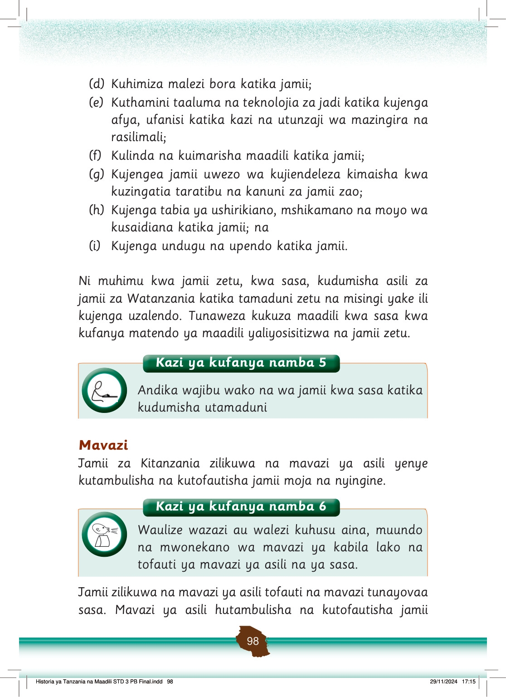

moja na nyingine.
Pamoja na tofauti hizo, kulikuwa na mambo yanayofanana katika mavazi yao.
Kielelezo namba 3 kinaonesha baadhi ya mavazi ya makabila mbalimbali ya Kitanzania.
Wanawake wawili wa Wadatooga wamevaa nguo za asili za rangi ya udongo na mapambo ya shingoni.
Mavazi ya kike ya Wadatoga
Wanawake wawili wa Kiwaha wamevaa nguo za asili za rangi ya machungwa na mapambo ya mikononi na shingoni.
Mavazi ya kike ya Waha
Wanaume wanne wa Kimasai wamevaa shuka za asili zenye rangi nyekundu, zambarau na manjano pamoja na mikufu ya shingoni.
Mavazi ya kike ya Wamasai
Mwanamke wa Kigogo amevaa gauni jeusi refu, mkanda wa kiunoni na mkufu shingoni.
Vazi la kike la Wagogo
Mwanaume wa Kimasai amevaa shuka jekundu na ameshika fimbo mkononi.
Vazi la kiume la Wamasai
Mwanaume wa Kisukuma amevaa vazi la kijivu, kofia na ameshika fimbo ndefu.
Vazi la kiume la Wasukuma
Wanaume wawili wa Wangoni wamevaa mavazi mekundu ya asili na wameshika fimbo na silaha za jadi.
Mavazi ya kiume ya Wangoni
Kielelezo namba 3: Baadhi ya Mavazi ya jamii za Watanzania
Mavazi ya asili ya Kitanzania yanasisitiza sifa zifuatazo:
(a) Mavazi ya heshima yenye kusitiri mwili, yaani mavazi yasiyoonesha maungo;